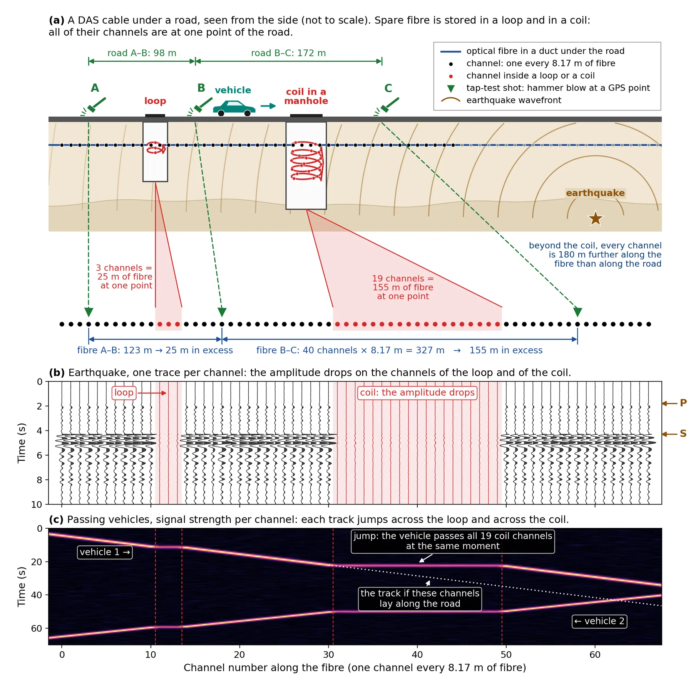
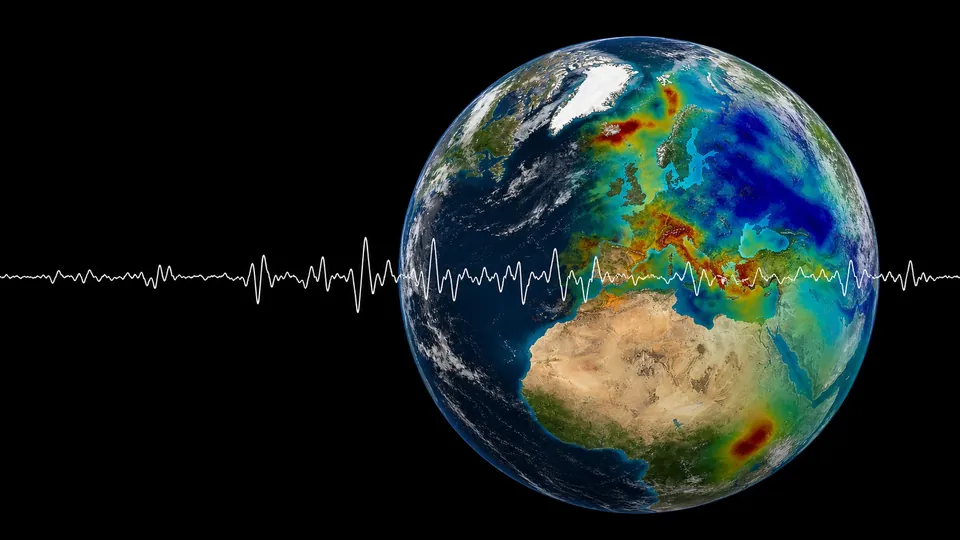
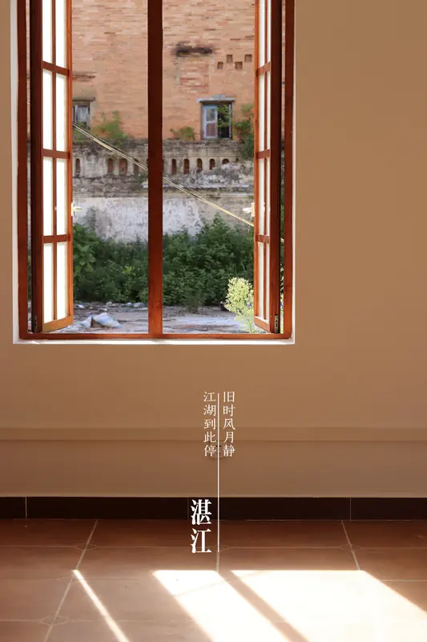
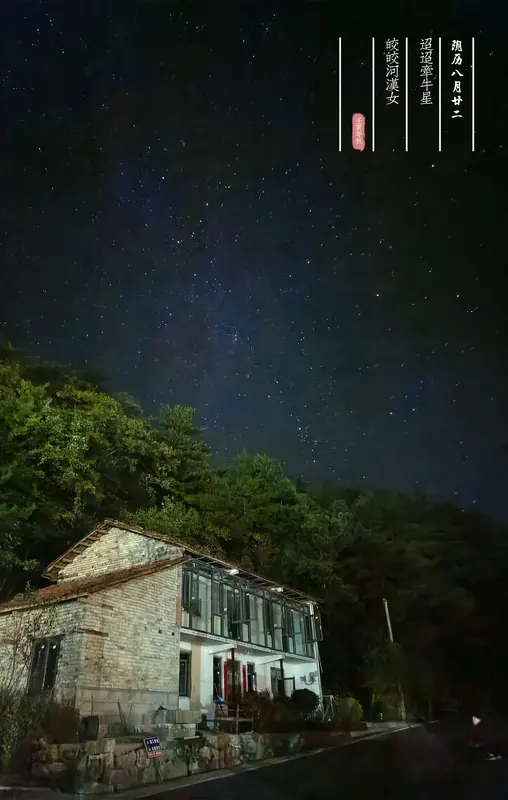

01 Hello
I turn telecomcables intoseismic arrays.
I’m a doctoral student in the Seismology & Wave Physics group at ETH Zürich, working with Andreas Fichtner. My instrument is distributed acoustic sensing (DAS): laser light in an ordinary glass fibre measures how the ground stretches, every few metres, along kilometres of cable.
I use it on the seafloor to find the small earthquakes that land networks resolve poorly, and under cities to image the shallow ground. Around the science I build open tools: for reading papers, mapping cables and picking wavefronts.
- 2025 – nowDoctoral student, Earth and Planetary Sciences, ETH Zürich
- 2023 – 2025MSc, Earth and Planetary Sciences, ETH Zürich
- Summer 2022Summer research with SWP at ETH Zürich: roadside DAS in Athens
- 2019 – 2023BSc in geophysics, minor in mathematics, School of the Gifted Young, University of Science and Technology of ChinaDAS work with Huajian Yao’s group from 2021

02 Selected work
-
- Seafloor DAS
- Matched filter
- Kefalonia, Greece
The Kefalonia Transform Fault ruptures in earthquakes above magnitude 6 every 10 to 20 years, but land networks resolve its small earthquakes poorly. For two months in 2024 we recorded DAS on a telecom cable on the seafloor between Kefalonia and Ithaca.
A matched filter with only five template events found 17,325 microearthquakes, nearly 20 times the 893 in the regional catalogue for the same period. They come in swarms, and one cluster holds more than 72 % of them. Near the template clusters, the magnitude of completeness drops by about two units.
Wang, Meier, Bogris, C. Simos, I. Simos, Melis & Fichtner. Persistent Faulting Activity Along the Kefalonia Transform Fault Revealed by Seafloor DAS. ESS Open Archive, 2026.

Earthquake spectra by magnitude over the ambient noise, channel at 11.0 km. From yuhan_das_spectra. -
- Fibre interferometry
- Calibration
- Earthquakes · ocean waves · traffic
On the same Kefalonia cable in 2024: one integrated fibre measurement, made with microwave-frequency interferometry, compared with the DAS channels beside it, for earthquakes, ocean waves and traffic.
Wang, Bogris, C. Simos, I. Simos, Melis, Deligiannidis & Fichtner. Calibrating Microwave-Frequency Fiber Interferometry Against Collocated DAS: Earthquakes, Ocean Waves, and Traffic. Seismological Research Letters, 2026.
Schematic · one integrated fibre measurement (blue), compared with the DAS channels beside it. -
- Theory
- Curved fibres
- Deployment design
A fibre measures strain along its own direction, so its shape filters the wavefield it records. This first part works out the response of a planar arc and turns it into a decision map for laying out a deployment.
Wang & Fichtner. Geometric Filtering in Curved Fibre-Optic Sensing — I. Planar-Arc Response and a Deployment Decision Map. 2026.
Schematic · a plane wave crosses a bend in the fibre, whose shape filters the wavefield it records (blue). -
- Channel mapping
- Tap tests · earthquakes · vehicles
A DAS interrogator counts channels along the fibre, and the fibre is longer than its route: installers leave coils of spare fibre in manholes. Between the interrogator and the beach manhole of the Kefalonia cable, 7.32 km of fibre lies on 6.44 km of ground; 0.71 km of the difference is spare fibre stored at eight points, in coils of 16 to 172 m.
I find that excess with three signals (tap tests, earthquake amplitudes and passing vehicles) and deliver a position with an uncertainty for each of the 1,872 channels.

Excess fibre along a cable and the three signals that show it. From das-channel-mapping-skill. -
- Urban DAS
- Ambient noise
- Seismic hazard
This began as my 2022 summer project with SWP at ETH Zürich, with Andreas Fichtner and Daniel Bowden: ambient-noise tomography and site amplification from roadside DAS in Athens. It grew into a study of the shallow subsurface for seismic hazard; Daniel Bowden is first author of the data and code.
Bowden, Tian, Wang, Smolinski, Lentas, Melis, Bogris, C. Simos et al. Shallow Subsurface Imaging for Seismic Hazard using Dark Fibers in Athens, Greece (data and code), 2026.
03 One cable, two months
17,325 microearthquakes found with five template events, against 893 in the regional catalogue for the same period.
Kefalonia–Ithaca seafloor cable, Greece24 April – 22 June 2024detections: preprint ↗cable: das-channel-mapping-skill ↗
04 Tools I build
SeismoHub
A self-hosted, local-first literature hub for seismology: paper trackers, AI reading with paragraph-anchored citations, licence-aware PDF harvesting.
SeismoHub Lite
A public, read-only daily snapshot: new seismology and wave-physics papers on one searchable page.
paper-pdf-harvest
Verified, licence-aware full-text PDFs for a reading list, from about twenty open channels.
yuhan-mfdas
Matched-filter earthquake detection for the Kefalonia seafloor cable: templates, stacked cross-correlation, MAD triggering, magnitudes.
das_wavefront_picker
STA/LTA wavefront detection and interactive picking on raw DAS waterfalls, with bad-channel rejection.
yuhan_das_spectra
Spectra of seafloor DAS: noise PSD and PPSD, earthquake spectra by magnitude, noise against ERA5 wind and waves.
All on GitHub · English / 中文
05 Also
Wave Lab
Six experiments on one finite-difference solver: a playground, arrays and DAS, time reversal, tomography, ambient noise and elastic waves.
Open the lab →
Tomographic Summer Chill
A two-day workshop on multi-scale tomography of the Earth, hosted by SWP. Co-organised with Andreas Fichtner.
Visit the site ↗06 Off duty
Night skies,landscapes,folk songs.
Looking
I photograph night skies, star trails and landscapes, and used to paint in Chinese ink wash and oil. Also travelling and cycling.
Reading
Shen Congwen, Yu Hua, Su Shi, Tao Yuanming; Russell, Thoreau, Hesse, Kafka.
Listening
Li Zhi, Yao Shisan, Li Jian, Coldplay, Bob Dylan; Einaudi, Morricone, Zimmer, Shore.








07 Contact
Let’s talk waves.